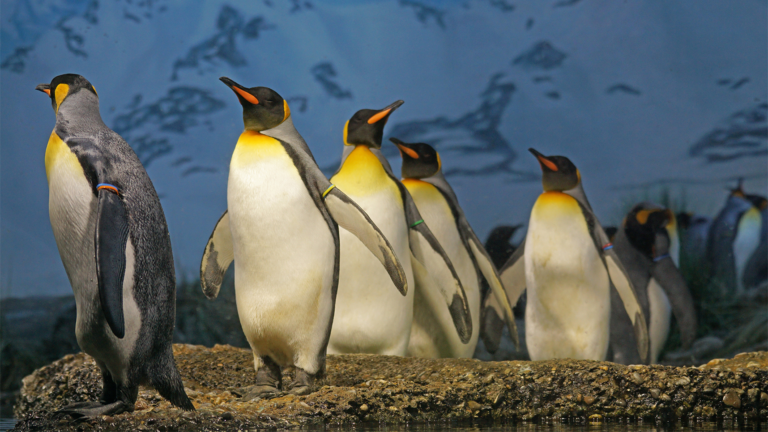

Acerca del pingüino
El pingüino es un ave marina que se encuentra principalmente en el Hemisferio Sur, en regiones frías como la Antártida y las islas subantárticas. Su hábitat se caracteriza por ser gélido y estar en contacto directo con el océano. En este artículo, exploraremos las características del hábitat del pingüino, su nicho ecológico, las adaptaciones que han desarrollado para sobrevivir en su entorno, el impacto del cambio climático en su hábitat y las medidas de conservación que se están implementando para proteger a estas increíbles aves.

Características del hábitat del pingüino
El hábitat del pingüino se compone principalmente de áreas costeras y marinas, donde tienen acceso a una gran cantidad de alimento y donde pueden llevar a cabo sus actividades de reproducción y crianza. Las regiones polares y subpolares son las más propicias para su supervivencia, ya que ofrecen condiciones óptimas para su alimentación y reproducción. Estas áreas se caracterizan por tener temperaturas extremadamente bajas, congelamiento del agua del mar y una gran cantidad de hielo
Los pingüinos suelen habitar en colonias, formando grandes agrupaciones. Estas colonias pueden estar ubicadas tanto en tierra firme como en islas o plataformas de hielo flotante. Cada especie de pingüino tiene sus preferencias de hábitat, pero en general se pueden encontrar en áreas donde pueden sumergirse en el agua para capturar peces y otros organismos marinos.
El nicho ecológico del pingüino
El nicho ecológico del pingüino se refiere al papel que desempeña en su ecosistema y a los recursos que utiliza. Los pingüinos son aves marinas que se han adaptado para vivir y reproducirse en el mar, por lo que su nicho ecológico está fuertemente relacionado con la disponibilidad de alimento y las condiciones del agua.
El principal recurso que utilizan los pingüinos es el alimento marino, principalmente peces e invertebrados como el krill. Para obtener su alimento, los pingüinos se sumergen en el agua y utilizan sus alas adaptadas como aletas para nadar rápidamente y capturar a sus presas. Además, su estructura corporal les permite bucear a profundidades significativas y permanecer bajo el agua durante largos periodos de tiempo
En su nicho ecológico, los pingüinos también desempeñan un papel importante en el ciclo de nutrientes marinos. A través de sus excrementos, aportan nutrientes al ecosistema marino, lo que beneficia a otros organismos como el fitoplancton.
Adaptaciones del pingüino al hábitat marino
Los pingüinos han desarrollado una serie de adaptaciones para sobrevivir en su hábitat marino. Estas adaptaciones incluyen características físicas y comportamentales que les permiten moverse eficientemente en el agua, mantener su temperatura corporal y protegerse de los depredadores.
Una de las adaptaciones más destacadas es su plumaje. Los pingüinos tienen un plumaje denso y impermeable que les permite mantenerse secos y conservar el calor corporal mientras nadan en el agua fría. Su plumaje también actúa como una barrera contra el frío y el viento, evitando la pérdida de calor.
Otra adaptación importante es su estructura corporal aerodinámica. Los pingüinos tienen cuerpos fusiformes y alas modificadas, que les permiten nadar de manera eficiente bajo el agua. Sus alas se han convertido en aletas que les proporcionan propulsión y estabilidad durante la natación.